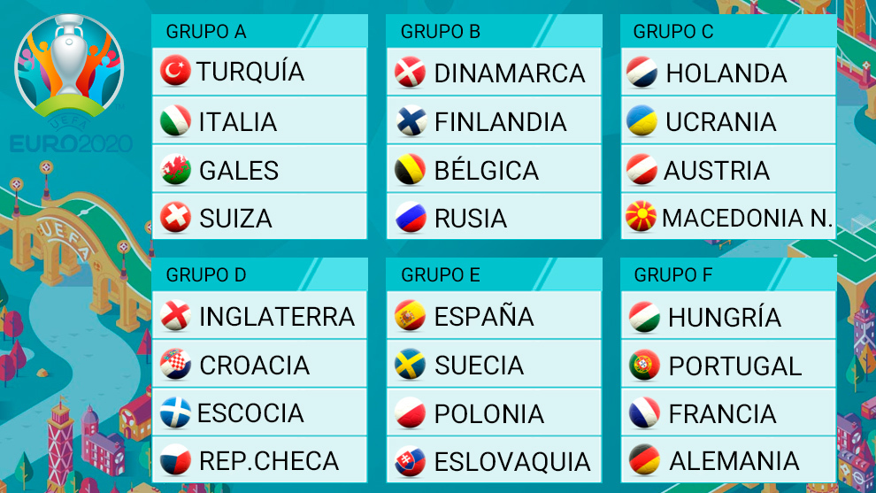
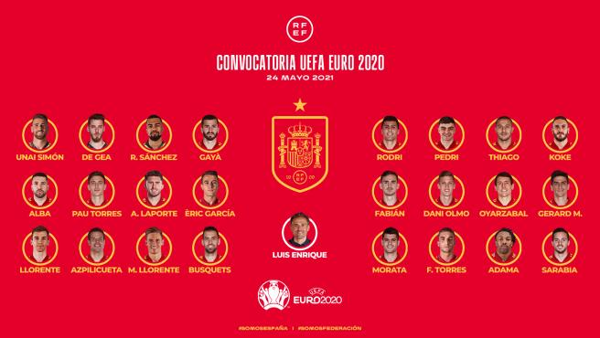
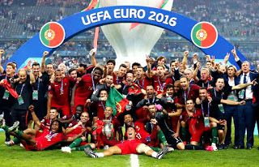
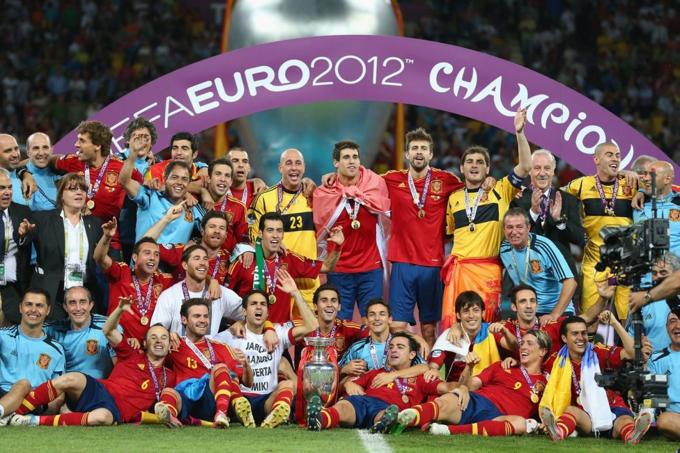
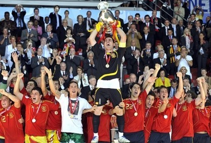
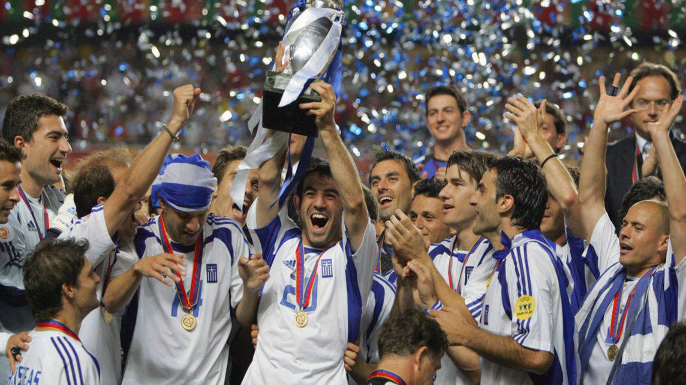
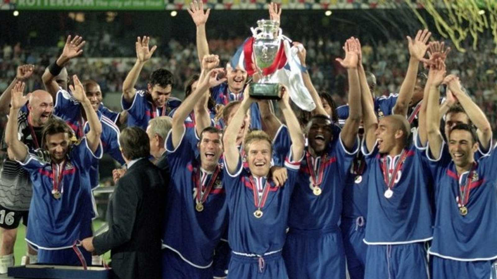

La Eurocopa
La eurocopa es otro torneo a nivel de selecciones, pero en este solo compiten los países de Europa, pero también se juega cada 4 años. La última Eurocopa se la llevó Portugal, venciendo a una Francia a la que todos veíamos como ganadora antes de empezar en un gran duelo europeo.
Eurocopa 2020
La Eurocopa de 2020 se va a jugar en 2021, debido a la gran pandemia mundial que todos hemos sufrido este pasado años, de la que todos seguimos tocados aún.
Esta campaña va a dar comienzo tan solo en unas semanas, concretamente el 11 de Junio, con un duelo de fase de grupos entre Turquía e Italia a las 21:00 en Roma.
Selección Española en la Eurocopa
El pasado día 24 de Mayo a las 12:00 del mediodía Luis Enrique desveló la convocatoria para esta eurocopa.
Todos podemos observar que faltán algunos jugadorazos como Iagos Aspas o Jesús Navas, pero hay una ausencia más notable todavía, ¿por qué no habrá convocado Luis Enrique al capitán? Esto es algo que ya han aclarado, Sergio Ramos ha sufrido varias lesiones esta temporada, perdiéndose gran parte de la temporada, por lo que Luis Enrique ha decidido dejarlo fuera de la convocatoria para darle el descanso que se merece y estar a tope la temporada siguiente.
Últimas Eurocopas
| Países | Año | Imagen | Resumen |
|---|---|---|---|
| Portugal | 2016 |  | Esta Eurocpa destacó por el gran papel de Portugal en la final, con Cristiano Ronaldo lesionado al principio del partido, Francia como rival jugando en casa y con Francia como preferida. |
| España | 2012 |  | Gran papel de España en la Eurocopa de 2012 viniendo de ganar el mundial de Sudáfrica en 2010 y ganando la Eurocopa por segundo año consecutivo. |
| España | 2008 |  | España también tuvo un gran papel en esta Eurocopa, también hizo un pedazo de torneo y se llevó la victroia por 0-1 a Alemanina con gol de Fernando Torres. |
| Grecia | 2004 |  | En esta Eurocopa fue una auténtica locura, con una Grecia totalmente revelación ganando el título en una final a Portugal donde ganaron por 0-1. |
| Francia | 2000 |  | Francia se convirtió en la primera campeona del mundo en ganar el Campeonato de Europa gracias a un gol del oro de Trezeguet, el resultado final fue de 2-1 ante Italia. |